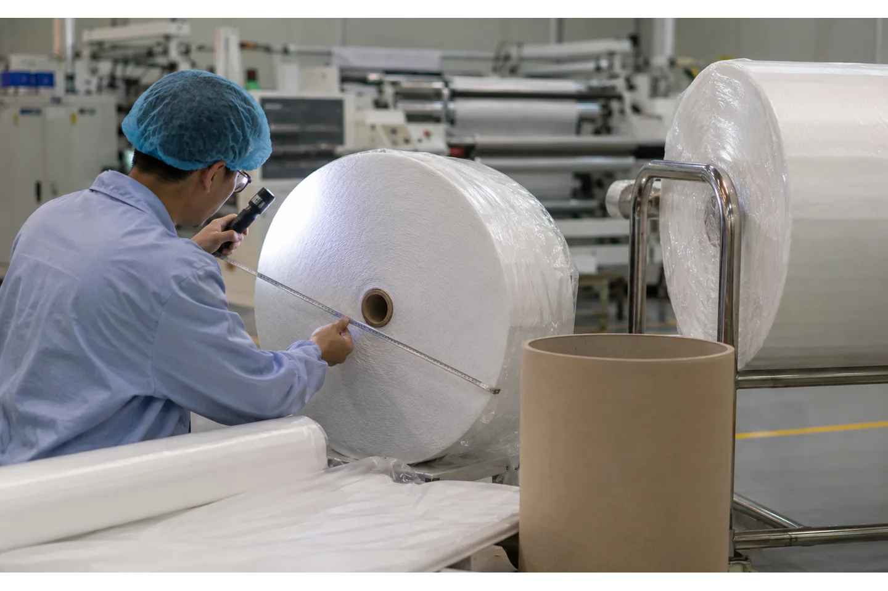

Published August 20, 2026 | By HDPTH Technical Editorial Team

“Medical nonwoven” describes an application context, not a single machine category. The material may be a spunlace, spunbond, meltblown, composite or laminated web used upstream of a medical or healthcare product. Its risk profile, surface treatment, packaging and quality requirements can differ from a general hygiene roll.
For buyers, the right machine brief keeps three questions separate: what the web converter needs the machine to do, what the plant’s quality system requires, and what regulations or customer specifications apply to the finished product. HDPTH can review the converting hardware and FAT around the first question; the customer’s quality and regulatory teams must approve the complete production process.
Start with the material and quality dossier
Give the supplier a controlled description of the web: fiber or polymer composition, GSM or thickness, width, roll diameter, core, surface finish, treatment, static sensitivity, packaging state and any restrictions on contact materials. Include the normal and worst-case roll condition, such as edge damage, telescoping or soft winding from the upstream process.
Do not send only a product name such as “medical nonwoven.” A machine engineer needs the physical behavior of the roll and the acceptable finished condition. If the material is supplied with a customer specification, attach the relevant dimensional and visual criteria. Mark confidential information clearly and separate it from the machine parameters that can be shared with a supplier.
Define the machine boundary and the cleanability expectation
Clarify which parts of the converting system contact the web, which areas must be accessible for cleaning, and which lubricants, coatings or materials are prohibited by the plant. Ask for the frame finish, roller coverings, guards, cable routing and access panels. If the machine is located in a controlled area, the facility team should define the room classification, air-handling rules and cleaning validation approach; the supplier should not invent those requirements.
For the machine itself, specify smooth accessible surfaces where appropriate, protected bearings, a documented cleaning method and a way to prevent loose trim from returning to the finished roll. The certificates page can help identify available company documentation, but a certificate does not by itself prove that a particular machine configuration meets a customer’s medical-product process.
Protect the web from stretch, wrinkles and edge damage
Healthcare nonwovens can be sensitive to tension, surface marks and contamination. The web path should use suitable roller surfaces, controlled acceleration, stable guiding and a slitting method that produces the required edge without excessive fiber release. A machine should have enough adjustment range to cover the material dossier, not an aggressive default recipe borrowed from paper.
Ask for tension-zone diagrams, sensor locations, knife access, edge-trim routing and finished-roll support. A tension and guiding review should be part of the inquiry. If the finished roll feeds a high-speed downstream process, specify the unwind direction, roll-end condition and label or packaging orientation at the same time.

Specify traceability without overpromising automation
Traceability may mean a recipe ID, material lot, operator, date, shift, roll length, finished diameter or inspection result. Decide which records your quality system actually needs and ask the machine supplier what can be stored, exported or printed. A simple recipe history can be more reliable than a complex system that operators do not maintain.
Define permission levels for changing tension, knife positions, speed limits and alarm settings. Ask how software backups are delivered and how a restored recipe is verified. If a barcode reader, printer or MES connection is needed, document the interface and ownership. Do not describe a data feature as “validated” unless the buyer’s validation process has actually approved it.
Roll geometry, core and packaging
Finished medical-material rolls may need tight dimensional control to fit a subsequent cutting, folding, coating or packaging process. State core ID and wall construction, finished diameter, width tolerance, roll weight, winding direction, end-face condition, label location and packaging support. Include how long the roll must remain stable before it is packed or shipped.
Review the unloading system and material-handling route before selecting a winding method. HDPTH’s nonwoven rewinding machines can be discussed around customer roll dimensions, but the inquiry must identify the exact format. For heavy or delicate rolls, check whether a shaft puller, roll pusher or separate handling cart is needed.
Planning a controlled-area roll-converting project?
Send the material dossier, roll drawings and quality checkpoints. HDPTH can review machine functions and FAT evidence while your quality team retains approval of the complete process.
Discuss your project with HDPTHFAT for a healthcare-material converting project
FAT should begin with document review: approved drawings, material data, risk items, recipe permissions, guards and the cleaning or access procedure. Then run representative material and record tension, speed, guide position, slitting setup, roll geometry, edge appearance and any loose fiber or trim observation relevant to the buyer’s process.
Use the buyer’s inspection method where possible. Verify alarm and stop behavior, roll unloading, changeover, recipe restoration and data export. The FAT checklist should identify what was tested, what was not tested and what remains for site acceptance. A factory test cannot replace the customer’s process qualification or regulatory release.
Installation and commissioning at an overseas plant
Prepare a controlled receiving and installation plan: protected storage for tooling, clean material flow, floor and utility checks, access for roll handling, and a method to keep packaging and construction debris away from the web path. The site-preparation checklist should be reviewed by engineering, maintenance, quality and EHS before shipment.
At commissioning, confirm that the local material, core batch and packaging match the approved specification. Recheck guards, sensor alignment, tension, edge quality and cleaning access after the machine has been moved. Capture the final recipe and the first accepted roll in the handover file.
Separate machine facts from compliance claims
A supplier can state verified machine functions, dimensions, controls and test results. The buyer must decide whether the complete process, facility and product meet the applicable customer or regulatory requirements. This boundary matters for medical materials: it prevents a sales page from implying that a converting line itself confers product approval.
When requesting a quotation from HDPTH, ask for technical drawings, material contact information, available certificates, FAT scope, manuals and support terms. Then have your quality team map those documents to your internal requirements. A clear evidence package is more useful than an unsupported label such as “medical-grade.”
How HDPTH can support the equipment review
HDPTH manufactures nonwoven, paper and flexible roll-material converting machinery. For a medical-material project, the engineering discussion should focus on the web path, low-damage handling, slitting, rewinding, guarding, access, documentation and acceptance evidence. Send the material dossier and roll drawings first, then define the production and quality checks.
Keep the final inquiry practical: material, widths, speeds, cores, finished diameters, roll weight, edge condition, cleaning expectations, traceability and FAT. That lets the team propose only the functions that can be verified for your process.
Turn the requirement into an RFQ line item
Before comparing quotations for medical nonwoven roll winding machine: a practical buyer’s specification guide, put the operating requirement in a form that two suppliers can price and test in the same way. State the material family and its full working range, the parent-roll condition, the finished-roll drawing, the core, the number of lanes, the target speed and the changeover pattern. If the job includes more than one substrate, list each substrate separately instead of using a single average value.
- Define the quality result the plant must accept, such as edge condition, roll profile, web presence, winding stability or commissioning evidence.
- List the measurement method, sample size, inspection locations, conditioning time and who signs the result.
- Ask for the relevant tooling, sensor, tension, guiding, drive and guarding details in the supplier response.
- Require a FAT trial on representative material and a clear method for repeating the setup after cleaning, transport or a material change.
This structure helps procurement compare like with like and gives production, maintenance and quality teams a shared handover record. It also makes later troubleshooting faster: the team can see whether a result changed because of the material, the recipe, the measurement method or the machine. A concise requirement sheet is usually more valuable than a long list of headline specifications with no acceptance method.
Buyer FAQs
Is a medical nonwoven roll winding machine automatically medical-grade?
No. “Medical” can describe the application or material. The buyer must define the complete quality, facility and regulatory requirements; the machine supplier should state only verified functions and evidence.
What material data should I send to a supplier?
Send composition, GSM or thickness, width, finish or treatment, roll diameter, core, weight, static sensitivity, packaging condition and the acceptable finished-roll criteria.
How can I reduce web damage during rewinding?
Specify suitable roller surfaces, stable tension, controlled acceleration, guiding, appropriate knife geometry, correct core support and a production-material trial with edge and roll-quality checks.
What belongs in the FAT?
Document review, guards and access, material trial, tension and speed, edge and roll geometry, alarms, recipe permissions, cleaning access, unloading, data export and the items reserved for site acceptance.
Can the supplier validate my medical process?
The supplier can provide machine drawings, manuals, certificates and test results. The customer’s quality and regulatory teams must determine and approve the validation and compliance of the complete process.
Sources
- U.S. FDA: Quality Management System Regulation overview for medical devices
- ANDRITZ: nonwoven and spunlace applications including hygiene and medical uses
- HDPTH certificates and documentation page
Define the evidence before you call a machine “medical”
Share your material, roll format, handling and documentation requirements with HDPTH. A precise machine boundary makes procurement, qualification and commissioning easier to manage.
Send an RFQ to HDPTH